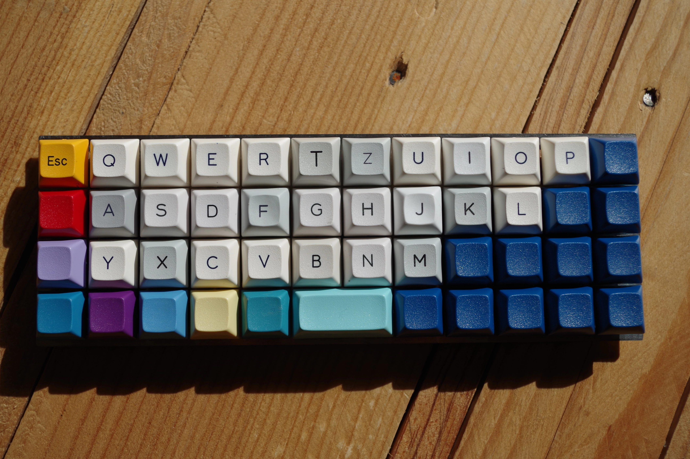
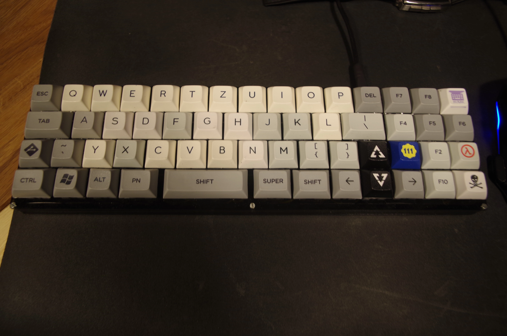
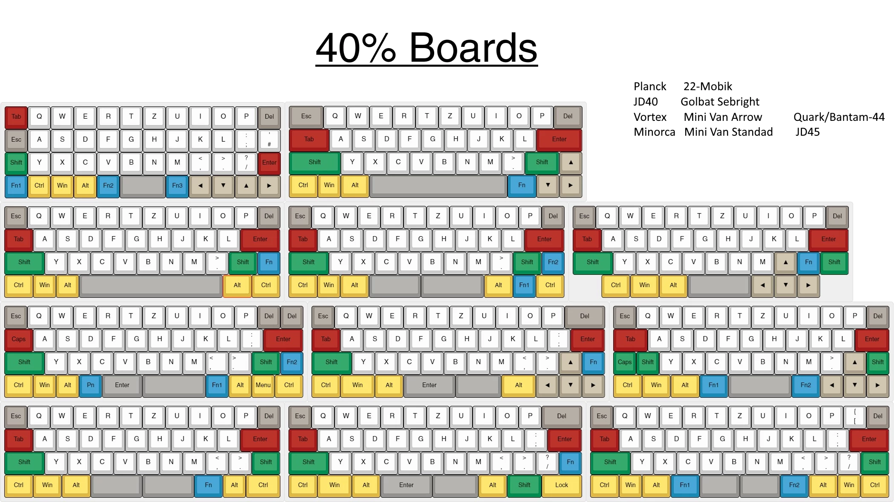
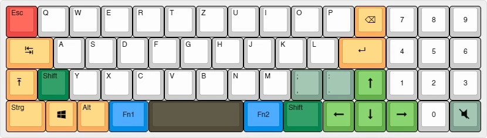

Studentcooking
Since I'm really into cooking I wanted to share my passion. As a student, I don't have a big kitchen, all
the tools or a big budget. So my plan is to share that it's possible anyway, to cook a wide variety
of simple and healthy meals for yourself. It's not even as hard as many might think.
So I created an
Instagram where I post the meals as soon as
they are cooked. In addition to that I set up a hugo blog on
hisfantor.com/studentcooking
, where you can find some of the "recipees" I have cooked. I keep the instructions as minimal as possible since I believe that you learn the most by trying yourself.
Blog
Another playground for my web design hobby is
my blog, where I try new stuff and test ideas. It is the same
as studentcooking a static site generator, but this time run by jekyll. But other than the web design aspect I try to collect
useful information there. I wrote some guides or just general write-ups of things that I have worked on regarding Linus, Keyboards
and so on. My idea is, if I have figured out something, then the next person doesn't have to do it, if I document the process well.
In addition to my own posts I started integrating guest posts about the same topics.
Since it's pretty easy to write markdown it could help to share some useful information in my opinion.
lowercase_games
Between 2016 and 2018 I worked on a couple of games with the lowercase_games team which I co-created.
I was responsible for game design, Linux versions and organisation within the team and our social media channels.
We made all our games for game jams, which was a great experience since we had a given theme for the game and a limited time (which was 72h for the last 3 games).
This retro looking game which is played on a command line might look simple, but has a trick to it.
It's a boss monster marathon where the boss evolves based on the methods you killed him last time,
which makes him basically unkillable a few levels in.
Here we have a story based point and click adventure which can be finished in about 15min.
It tells a compelling tale of a young man and his room. Also our famous mascot the flamingo
will be introduced for the first time.
A side-scroller that simulates being drunk, telling a fun story. The gameplay gets harder the more
you drink, but the end... well you'll see
This dungeon full of mythical monsters is not the easiest to master. You'll encounter 4 different monsters
which are so lovely that you might fall for them and fight off the humans. Depending on your answers, you can
achieve a variety of different endings.
Mechanical Keyboards
On the 24.8.2016 started my journey down the rabbit hole which is r/MechanicalKeyboard.
I posted a layout idea of an 40% layout with additional numpad. If you follow
this comment thread
you'll witness how a reddit user in the states was so intrigued by my design that within hours of my post he laser cut
the plate and case and built up a prototype which arrived a few weeks later at my home and became my first mk.
The second one I built was the famous planck which I outfitted with a USB hub so I can add a mouse dongle and a micro SD card
to plug it all in my phone. After r/place in 2017 I created an homage to the blue corner which got much love from the community.
Since I was so in love with these small keyboards I created a roundup of the most common 40% layouts, which has been
used for keycap reference. I'm still working on keyboards, writing up information and building new boards as I go.



